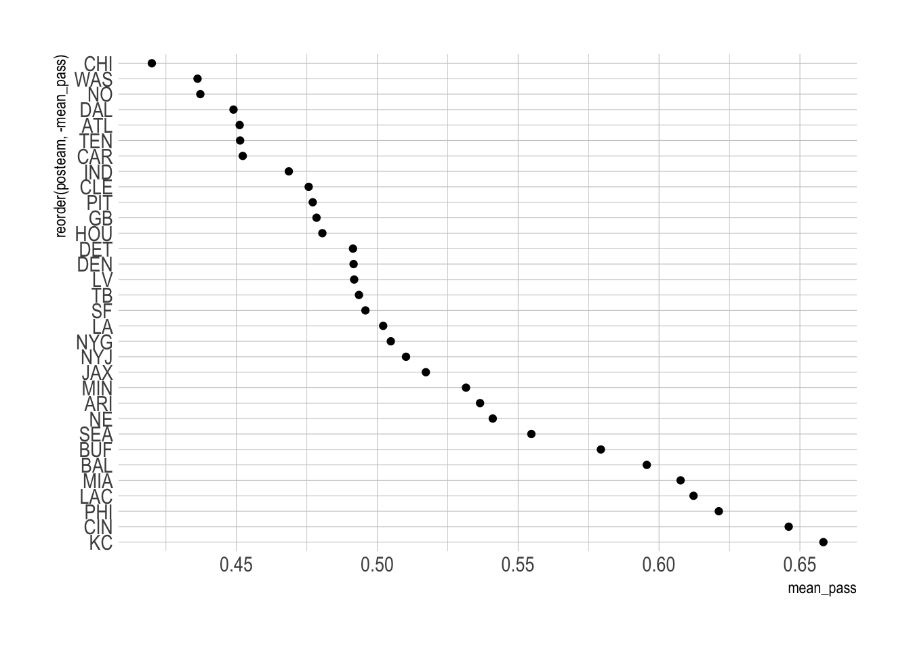
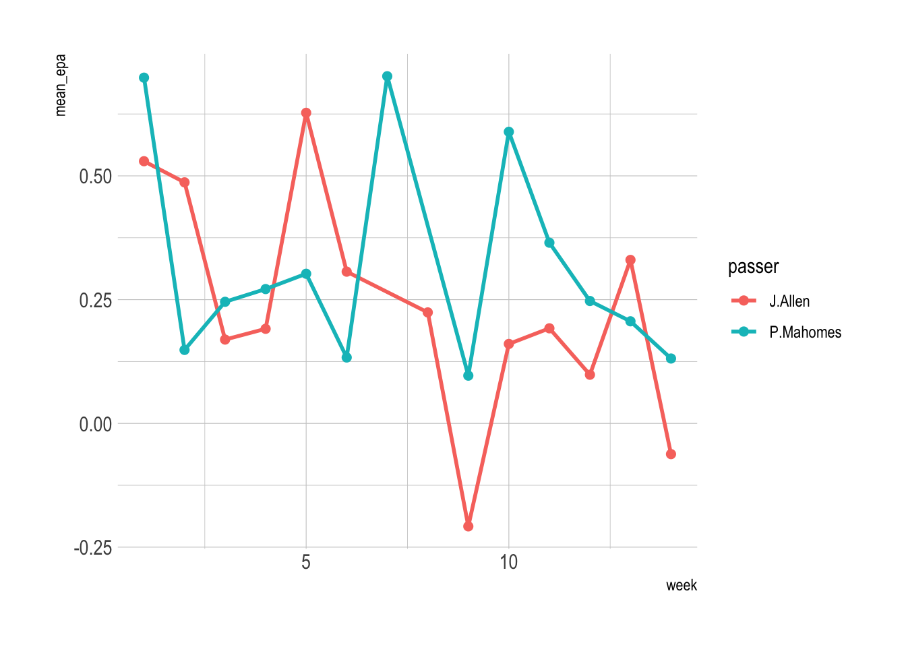
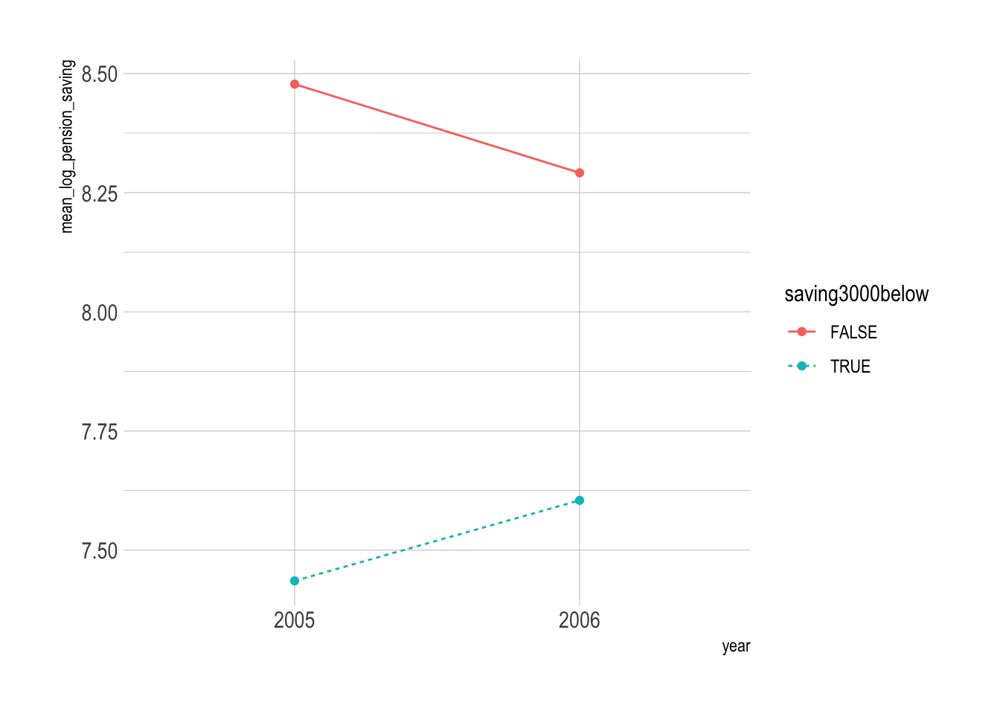
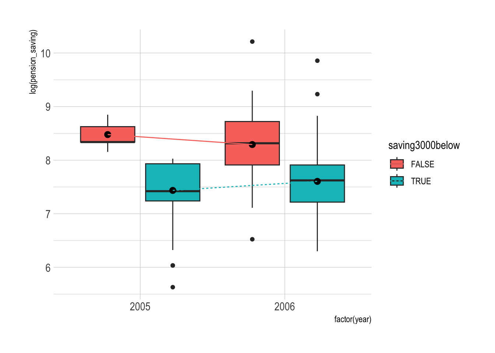
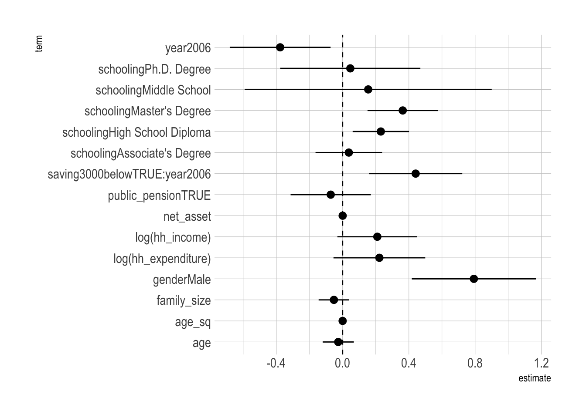
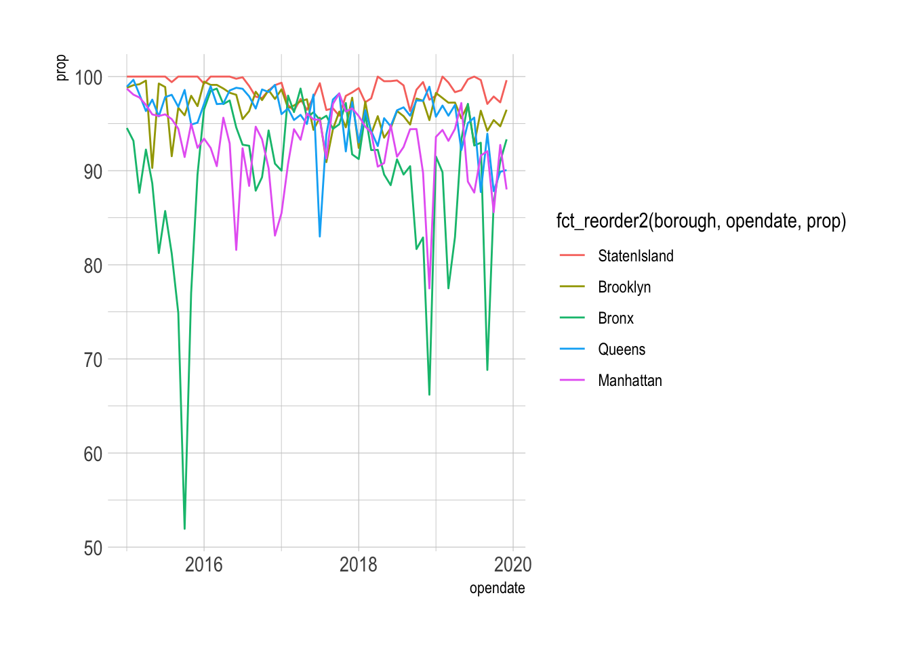

library(tidyverse)
library(skimr)
library(lubridate)
library(stargazer)
library(broom)Fall 2022 DANL 200 Final Exam 2
Load R packages
Question 1
The following is the data.frame for Question 1.
NFL2022_stuffs <-
read_csv("https://bcdanl.github.io/data/NFL2022_stuffs.csv")NFL2022_stuffsis the data.frame that contains information about NFL games in year 2022, in which the unit of observation is a single play for each drive in a NFL game.cf) A drive in American football is a word used to describe what a team’s offense does with the football while it is in their possession and the series of plays that follow their gaining possession of the ball.
Variable description
play_id: Numeric play identifier that when used withgame_idanddriveprovides the unique identifier for a single playgame_id: Ten digit identifier for NFL game.drive: Numeric drive number in the game.week: Season week.posteam: String abbreviation for the team with possession.qtr: Quarter of the game (5 is overtime).half_seconds_remaining: Numeric seconds remaining in the half.down: The down for the given play.- Basically you get four attempts (a.k.a. downs) to move the ball 10 yards (by either running with it or passing it).
- If you make 10 yards then you get another set of four downs.
pass: Binary indicator if the play was a pass play.wp: Estimated winning probability for theposteamgiven the current situation at the start of the given play.
Q1a.
In data.frame, NFL2022_stuffs, remove observations for which values of posteam is missing.
Show the code
q1a <- NFL2022_stuffs %>%
filter(!is.na(posteam))Q1b.
- Summarize the mean value of
passfor eachposteamwhen all the following conditions hold:wpis greater than 20% and less than 75%;
downis less than or equal to 2; and
half_seconds_remainingis greater than 120.
Show the code
q1b <- q1a %>%
filter(wp > .20, wp < .75, down <= 2, qtr <= 2,
half_seconds_remaining > 120) %>%
group_by(posteam) %>%
summarize(mean_pass = mean(pass),
plays = n()) %>%
arrange(mean_pass)Q1c.
Provide both (1) a ggplot code with
geom_point()using the resulting data.frame in Q1b and (2) a simple comments to describe the mean value ofpassfor eachposteam.In the ggplot, reorder the
posteamcategories based on the mean value ofpassin ascending or in descending order.
Show the code
ggplot(data = q1b,
aes( x = reorder(posteam,-mean_pass),
y = mean_pass)) +
geom_point() +
coord_flip()
Comments are not provided here.
Q1d.
Download the CSV file, NFL2022_epa.csv.
Variable description for NFL2022_epa.csv
play_id: Numeric play identifier that when used withgame_idanddriveprovides the unique identifier for a single playgame_id: Ten digit identifier for NFL game.drive: Numeric drive number in the game.posteam: String abbreviation for the team with possession.passer: Name of the player who passed a ball to a receiver by initially taking a three-step drop, backpedaling into the pocket to make a pass. (Mostly, the quarterbacks)receiver: Name of the receiver.epa: Expected points added (EPA) by the posteam for the given play.
Read the CSV file,
NFL2022_epa.csv, as data.frame with the name,NFL2022_epa.Then, create the data.frame,
NFL2022_stuffs_EPA, that includes- all the variables in the data.frame,
NFL2022_stuffs, and
- all the variables in the data.frame,
passer,receiver, andepain the data.frame,NFL2022_epaby joining the two data.frames.
Show the code
NFL2022_epa <-
read_csv("/Users/byeong-hakchoe/Google Drive/suny-geneseo/teaching-materials/lecture-data/NFL2022_epa.csv")
q1d <- NFL2022_stuffs %>%
left_join(NFL2022_epa) %>%
filter(!is.na(passer))Q1e.
- Provide both (1) a single ggplot and (2) a simple comment to describe the NFL weekly trend of
weekly mean value ofepafor each of passers, (a)passer == "J.Allen"and (b)passer == "P.Mahomes".
Show the code
q1e <- q1d %>%
filter( str_detect(passer, "J.Allen") |
str_detect(passer, "P.Mahomes"))%>%
group_by(week, passer) %>%
summarize(mean_epa = mean(epa, na.rm = TRUE))
ggplot( q1e,
aes(x = week, y = mean_epa, color = passer) ) +
geom_line(size = 1) + geom_point(size = 2)
Q1f.
- Calculate the difference between the mean value of
epaforpasser == "J.Allen"the mean value ofepaforpasser == "P.Mahomes"for each value ofweek.
Show the code
q1f <- q1e %>%
pivot_wider(values_from = mean_epa,
names_from = passer) %>%
mutate(diff_epa = J.Allen - P.Mahomes)Q1g.
- Summarize the resulting data.frame in Q1d, with the following four variables:
posteam: String abbreviation for the team with possession.passer: Name of the player who passed a ball to a receiver by initially taking a three-step drop, backpedaling into the pocket to make a pass. (Mostly, the quarterbacks)mean_epa: Mean value of epa in 2022 for each passern_pass: Number of observations for each passer
- Then find the top 10 NFL passers in 2022 in terms of the mean value of
epa, conditioning thatn_passmust be greater than or equal to the third quartile level ofn_pass.
Show the code
q1g <- q1d %>%
group_by(posteam, passer) %>%
summarize(mean_epa = mean(epa, na.rm = TRUE),
n = n()) %>%
ungroup()
skimr::skim(q1g) # to see the third quartile| Name | q1g |
| Number of rows | 99 |
| Number of columns | 4 |
| _______________________ | |
| Column type frequency: | |
| character | 2 |
| numeric | 2 |
| ________________________ | |
| Group variables | None |
Variable type: character
| skim_variable | n_missing | complete_rate | min | max | empty | n_unique | whitespace |
|---|---|---|---|---|---|---|---|
| posteam | 0 | 1 | 2 | 3 | 0 | 32 | 0 |
| passer | 0 | 1 | 5 | 13 | 0 | 98 | 0 |
Variable type: numeric
| skim_variable | n_missing | complete_rate | mean | sd | p0 | p25 | p50 | p75 | p100 | hist |
|---|---|---|---|---|---|---|---|---|---|---|
| mean_epa | 0 | 1 | -0.23 | 1.46 | -6.89 | -0.3 | -0.03 | 0.14 | 3.77 | ▁▁▁▇▁ |
| n | 0 | 1 | 167.48 | 204.66 | 1.00 | 2.0 | 58.00 | 355.00 | 636.00 | ▇▁▁▂▁ |
Show the code
q1g <- q1g %>%
filter(n > 355) %>%
arrange(-mean_epa)Question 2
The following is the description for Question 2:
The income tax exemption scheme for pension savings is a system that reduces an income tax burden, so that individuals can build up more personal pensions to help them ensure their well-being in old age.
In particular, from 2005 to 2006, the tax authority expanded the limit amount of income tax exemption for pension savings from $2,000 to $3,000.
That is to say, pension savings were exempt from income tax up to $2,000 in 2005, and increased to $3,000 for the 2006 tax year.
The following data.frame comes from the Census and the tax authority, and covers households in years 2005-2006:
pension_tax <-
read_csv("https://bcdanl.github.io/data/pension_tax_cleaned.csv")Variable description
hh_id: Household Identification (ID) number.gender: Gender (Female or Male).schooling: Level of educational attainment.region: City-level geographic region.year: Year (2005 or 2006).pension_saving: Amount of yearly pension saving (in $).saving3000below: TRUE ifpension_savingin 2005 is less than $3,000;FALSEotherwise.family_size: Family size (non-negative integer values).net_asset: Net asset (in $1,000).public_pension:TRUEif the type of pension is public;FALSEotherwise.home_owner:TRUEif household owns a house;FALSEotherwise.age: Age of the household member who is a main income contributor.age_sq: Age squared.hh_expenditure: Household expenditure.hh_income: Household income.
Q2a.
Report (1) minimum, (2) median, (3) maximum, (4) mean, and (5) standard deviation of variable pension_saving for New York, NY.
Show the code
table(pension_tax$region)
Charlotte, NC Chicago, IL Columbus, OH Denver, CO
23 26 22 5
Houston, TX Indianapolis, IN Jacksonville, FL Los Angeles, CA
31 20 14 103
Nashville, TN New York, NY Oklahoma City, OK Philadelphia, PA
16 98 9 13
Phoenix, AZ Seattle, WA Washington, DC
6 15 22 Show the code
pension_tax %>%
filter(region == "New York, NY") %>%
skim(pension_saving)| Name | Piped data |
| Number of rows | 98 |
| Number of columns | 15 |
| _______________________ | |
| Column type frequency: | |
| numeric | 1 |
| ________________________ | |
| Group variables | None |
Variable type: numeric
| skim_variable | n_missing | complete_rate | mean | sd | p0 | p25 | p50 | p75 | p100 | hist |
|---|---|---|---|---|---|---|---|---|---|---|
| pension_saving | 0 | 1 | 2402.55 | 1536.21 | 557.24 | 1370.19 | 2066.74 | 2786.19 | 6965.48 | ▇▆▂▁▁ |
Q2b.
Using the given data.frame, pension_tax, create the data.frame, pension_tax, for which - (1) year is a factor-type variable of year with a reference level, 2005. - (2) schooling is a factor-type variable of schooling with the following order of levels, defined in the educ vector:
educ <- c( "Bachelor's Degree",
"Elementary School",
"Middle School",
"High School Diploma",
"Associate's Degree",
"Master's Degree",
"Ph.D. Degree" )- Answer
Show the code
pension_tax <- pension_tax %>%
mutate( year = factor(year, levels = c(2005, 2006) ),
schooling = factor(schooling, levels = educ )
)
# levels(pension_tax$year)
# levels(pension_tax$schooling)Q2c.
Provide both (1) ggplot and (2) simple comments to describe the trend for the mean value of log(pension_saving) for each group of saving3000below.
Show the code
q2c <- pension_tax %>%
group_by(year, saving3000below) %>%
summarise( mean_log_pension_saving = mean( log(pension_saving) ) )
q2c# A tibble: 4 × 3
# Groups: year [2]
year saving3000below mean_log_pension_saving
<fct> <lgl> <dbl>
1 2005 FALSE 8.48
2 2005 TRUE 7.44
3 2006 FALSE 8.29
4 2006 TRUE 7.60Show the code
ggplot(data = q2c,
aes(x = year, y = mean_log_pension_saving,
group = saving3000below, color = saving3000below) ) +
geom_line(aes(lty = saving3000below) ) +
geom_point()
Comments are not provided here.
Q2d.
Provide both (1) ggplot and (2) simple comments to describe the trend for the distribution of log(pension_saving) for each group of saving3000below.
Show the code
ggplot(data = pension_tax,
aes(x = factor(year), y = log(pension_saving))) +
geom_boxplot( aes(fill = saving3000below ),
position=position_dodge(.9) ) +
stat_summary( aes( group = saving3000below ),
fun = mean,
position=position_dodge(.9)) +
geom_line(data = q2c,
aes(x = factor(year), y = mean_log_pension_saving,
group = saving3000below, color = saving3000below,
lty = saving3000below),
position=position_dodge(.9) )
Comments are not provided here.
Q2e.
Remove the observations in the data.frame, pension_tax, if the number of observations for each
hh_idis 1.Then, randomly split the data.frame, pension_tax, into training and testing data.frames.
Approximately 75% of observations in the data.frame, pension_tax, must go to the training data.frame.
The rest observations in the the data.frame, pension_tax, must go to the testing data.frame.
Additionally, in both training and testing data.frames,
- the number of observations for each
hh_idmust be 2.
- the number of observations for each
- the fraction of observations with
saving3000below== TRUE must be approximately 75%.
- the fraction of observations with
- the fraction of observations with
saving3000below== FALSE must be approximately 25%.
- the fraction of observations with
Show the code
q1c <- pension_tax %>%
group_by(hh_id) %>%
mutate( n = n() ) %>%
filter( n == 2 )
q1c_T <- q1c %>%
filter( saving3000below == T )%>% # 214
group_by(hh_id) %>%
mutate( n = n() ) %>%
filter( n == 2 ) %>% # 214
ungroup()
q1c_F <- q1c %>%
filter( saving3000below == F )%>% # 82
group_by(hh_id) %>%
mutate( n = n() ) %>%
filter( n == 2 ) %>% # 82
ungroup()
q1c_T_05 <- q1c_T %>%
filter( year == 2005 )
q1c_T_06 <- q1c_T %>%
filter( year == 2006 )
q1c_F_05 <- q1c_F %>%
filter( year == 2005 )
q1c_F_06 <- q1c_F %>%
filter( year == 2006 )
set.seed(2)
gp_T <- runif( nrow(q1c_T_05))
set.seed(3)
gp_F <- runif( nrow(q1c_F_05) )
q1c_T_05_train <- q1c_T_05 %>%
filter(gp_T > .25)
q1c_T_06_train <- q1c_T_06 %>%
filter(gp_T > .25)
q1c_F_05_train <- q1c_F_05 %>%
filter(gp_F > .25)
q1c_F_06_train <- q1c_F_06 %>%
filter(gp_F > .25)
q1c_T_05_test <- q1c_T_05 %>%
filter(gp_T <= .25)
q1c_T_06_test <- q1c_T_06 %>%
filter(gp_T <= .25)
q1c_F_05_test <- q1c_F_05 %>%
filter(gp_F <= .25)
q1c_F_06_test <- q1c_F_06 %>%
filter(gp_F <= .25)
dtrain <- rbind(q1c_T_05_train, q1c_T_06_train,
q1c_F_05_train, q1c_F_06_train) %>%
arrange(hh_id, year)
dtest <- rbind(q1c_T_05_test, q1c_T_06_test,
q1c_F_05_test, q1c_F_06_test) %>%
arrange(hh_id, year)
skim( dtrain %>% count(hh_id) %>% select(n) )| Name | dtrain %>% count(hh_id) %… |
| Number of rows | 109 |
| Number of columns | 1 |
| _______________________ | |
| Column type frequency: | |
| numeric | 1 |
| ________________________ | |
| Group variables | None |
Variable type: numeric
| skim_variable | n_missing | complete_rate | mean | sd | p0 | p25 | p50 | p75 | p100 | hist |
|---|---|---|---|---|---|---|---|---|---|---|
| n | 0 | 1 | 2 | 0 | 2 | 2 | 2 | 2 | 2 | ▁▁▇▁▁ |
Show the code
skim( dtest %>% count(hh_id) %>% select(n) )| Name | dtest %>% count(hh_id) %>… |
| Number of rows | 39 |
| Number of columns | 1 |
| _______________________ | |
| Column type frequency: | |
| numeric | 1 |
| ________________________ | |
| Group variables | None |
Variable type: numeric
| skim_variable | n_missing | complete_rate | mean | sd | p0 | p25 | p50 | p75 | p100 | hist |
|---|---|---|---|---|---|---|---|---|---|---|
| n | 0 | 1 | 2 | 0 | 2 | 2 | 2 | 2 | 2 | ▁▁▇▁▁ |
Q2f.
Consider the following formula for linear regression:
formula <- log(pension_saving) ~
saving3000below * year +
log(hh_income) + log(hh_expenditure) +
family_size + net_asset + schooling +
gender + age + age_sq + public_pensionTrain the linear regression model with the above formula.
If you could not properly split the data.frame into the training and testing data.frames in Q2e, use the data.frame,
pension_tax, as the training data.frame.Report the summary of the linear regression result.
Show the code
dtrain <- dtrain %>%
mutate(net_asset = net_asset / 1000)
model <- lm( formula,
data = dtrain )Show the code
stargazer(model, type = 'text')| Dependent variable: | |
| log(pension_saving) | |
| saving3000below | -0.839*** |
| (0.106) | |
| year2006 | -0.377** |
| (0.152) | |
| log(hh_income) | 0.210* |
| (0.121) | |
| log(hh_expenditure) | 0.222 |
| (0.139) | |
| family_size | -0.052 |
| (0.046) | |
| net_asset | 0.0004* |
| (0.0002) | |
| schoolingMiddle School | 0.155 |
| (0.373) | |
| schoolingHigh School Diploma | 0.231*** |
| (0.085) | |
| schoolingAssociate’s Degree | 0.038 |
| (0.101) | |
| schoolingMaster’s Degree | 0.363*** |
| (0.106) | |
| schoolingPh.D. Degree | 0.047 |
| (0.211) | |
| genderMale | 0.793*** |
| (0.187) | |
| age | -0.026 |
| (0.047) | |
| age_sq | 0.0002 |
| (0.001) | |
| public_pension | -0.072 |
| (0.121) | |
| saving3000belowTRUE:year2006 | 0.441*** |
| (0.141) | |
| Constant | 4.780*** |
| (1.314) | |
| Observations | 218 |
| R2 | 0.475 |
| Adjusted R2 | 0.433 |
| Residual Std. Error | 0.461 (df = 201) |
| F Statistic | 11.367*** (df = 16; 201) |
| Note: | p<0.1; p<0.05; p<0.01 |
Q2g.
Visualize the confidence intervals of all the beta estimates except for the variables
(Intercept)andsaving3000below.What does it mean that a confidence interval of a beta estimate contains a zero level of its beta estimate?
Show the code
sum_model <- tidy(model) %>%
filter(term != "(Intercept)", term != "saving3000belowTRUE") %>%
mutate(star = ifelse(p.value <= .1, T, F)) %>%
select(star, everything())
ggplot(sum_model) +
geom_pointrange( aes(x = term,
y = estimate,
ymin = estimate - 2*std.error,
ymax = estimate + 2*std.error ) ) +
geom_hline(aes(yintercept = 0), lty = 2) +
coord_flip()
- If
estimate == 0belongs to a confidence interval of the beta estimate, the beta estimate may not be statistically different from zero, and there is insufficient evidence to conclude that there is a non-zero relationship between the explanatory variable and the outcome variable.
Q2h.
Interpret the estimated beta coefficients for the following variables—
genderMale
log(hh_income)
schoolingHigh School Diploma
net_asset
—from the model with formula in Q2f.
- Interpretation is not provided here.
Q2i.
Provide (1) the interpretation of the beta estimate corresponding to the following question— - How did the tax exemption of household income affect the pension_saving? —and (2) any intuitive explanations on it.
- Answer
- Workers who had less than $3,000 in pension savings in 2005 had an incentive to further increase their pension savings in 2006, as the upper limit of income tax deduction increases.
- On the other hand, workers who had more than $3,000 in pension savings in 2005 were hardly affected by the change in the upper limit.
Question 3
The following is the data.frame for Question 3.
NYComplaints <-
read_csv("https://bcdanl.github.io/data/NYComplaints.csv")- The data.frame, NYComplaints, contains information about complaints from New York City.
Variable description
unique_key: Complaint identifier.year_open,month_open,day_open: Date the casework is created by staff.year_close,month_close,day_close: Date the casework was closed.- A casework could be closed because the issue is resolved or because no further action could be taken.
NAif the casework is not resolved.
complaint_type: Broader category designated by staff for the constituent casework.complaint_typecorresponds to NYC Council Legislative Committees.
descriptor: Specific category designated by staff for the constituent casework.zip: Zip code of the constituent.borough: Borough of the constituent.city: City of the constituent.
Q3a.
- Calculate the number of observations for each
complaint_type. - Find the top 10 most popular complaint types.
Show the code
NYComplaints %>%
count(complaint_type) %>%
arrange(desc(n))# A tibble: 55 × 2
complaint_type n
<chr> <int>
1 Housing and Buildings 51541
2 Transportation 30689
3 Finance 17862
4 Immigration 12940
5 General Welfare 10381
6 Sanitation 8575
7 Parks 7573
8 Public Safety 7277
9 Environment 6601
10 Governmental Operations 5897
# ℹ 45 more rowsQ3b.
Calculate the number of observations for each
complaint_typefor eachborough.Find the top 3 most popular complaint types for each
borough.
Show the code
NYComplaints %>%
group_by(borough, complaint_type) %>%
tally() %>%
slice_max(order_by = n,
n = 3)# A tibble: 18 × 3
# Groups: borough [6]
borough complaint_type n
<chr> <chr> <int>
1 Bronx Housing and Buildings 4963
2 Bronx Finance 2559
3 Bronx Immigration 2286
4 Brooklyn Housing and Buildings 10915
5 Brooklyn Finance 6825
6 Brooklyn Transportation 6592
7 Manhattan Housing and Buildings 24574
8 Manhattan Transportation 4389
9 Manhattan General Welfare 2718
10 Queens Transportation 7727
11 Queens Housing and Buildings 6889
12 Queens Finance 3402
13 Staten Island Transportation 9668
14 Staten Island Sanitation 2682
15 Staten Island Finance 2003
16 <NA> Housing and Buildings 2431
17 <NA> Immigration 2058
18 <NA> Transportation 1601Q3c.
Provide both (1) a single ggplot and (2) a simple comment to describe the monthly trend of the proportion of resolved complaints for each borough.
The proportion of resolved complaints in one borough is defined as the number of resolved complaints in one borough divided by the number of all complaints in that borough.
Show the code
q3c <- NYComplaints %>%
filter(!is.na(borough)) %>%
mutate( resolved = ifelse(!is.na(year_close), T, F) ) %>%
count(borough, resolved, year_open, month_open) %>%
mutate(opendate = make_date(year_open, month_open)) %>%
arrange(opendate, borough, resolved) %>%
select(-year_open, -month_open) %>%
unite(tmp, borough, resolved) %>%
pivot_wider(names_from = tmp,
values_from = n,
values_fill = 0) %>%
mutate(prop_Bronx = 100 * Bronx_TRUE/(Bronx_TRUE + Bronx_FALSE),
prop_Brooklyn = 100 * Brooklyn_TRUE/(Brooklyn_TRUE + Brooklyn_FALSE),
prop_Manhattan = 100 * Manhattan_TRUE/(Manhattan_TRUE + Manhattan_FALSE),
prop_Queens = 100 * Queens_TRUE/(Queens_TRUE + Queens_FALSE),
prop_StatenIsland = 100 * `Staten Island_TRUE`/(`Staten Island_TRUE` + `Staten Island_FALSE`)
) %>%
select(opendate, starts_with("prop")) %>%
pivot_longer(prop_Bronx:prop_StatenIsland,
names_to = 'borough',
values_to = 'prop') %>%
mutate(borough = str_replace(borough, "prop_", ""))
ggplot(q3c) +
geom_line(aes(x = opendate, y = prop,
color = fct_reorder2(borough, opendate, prop)))